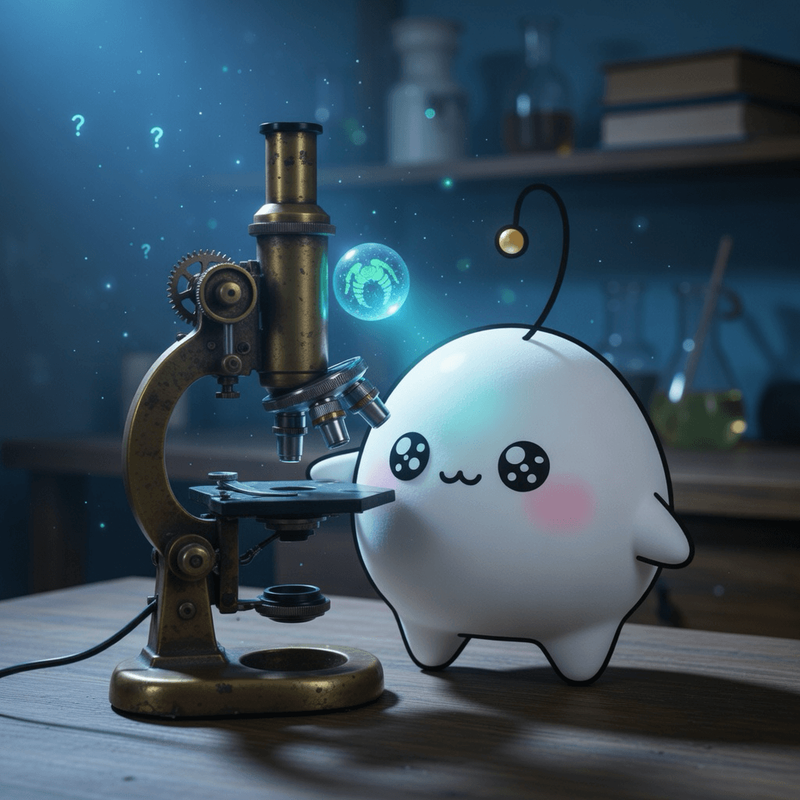

August 11, 2026
August 11, 2026

Inspiration
Compression is prediction
Information theory connects compression and prediction: the better a system understands what comes next, the more efficiently it can represent what's now.
The lifesaving secret hidden inside a horseshoe crab's blue blood
Horseshoe crab blood is the source of LAL, an irreplaceable bacterial-detection agent used to ensure every injectable drug and medical implant is safe.
llama.cpp
The open-source project bringing large language model inference to local machines with native Apple Silicon support.